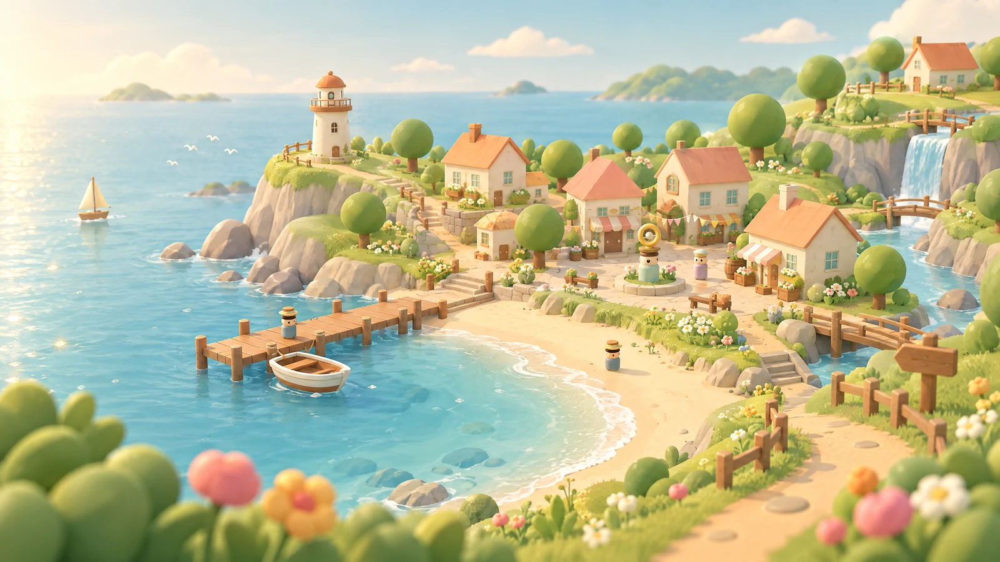

搭配今天的样子
脸型、眼睛、眉毛、鼻子、嘴巴、发型、肤色、穿搭与海星发夹等配饰都可以挑选，变化会立刻体现在原创 3D 角色上。
一座能把日常过慢一点的小海岛
挑好喜欢的五官、发型与配饰，穿上今天的衣服，带着小伙伴去海边拾贝、和邻居赶集、到池塘垂钓，再把家门口慢慢布置成喜欢的样子。

这里没有必须完成的清单，只有一些等你发现的小事。
潮声、花香，还有留给自己的时间。
海岛生活小记 01
从衣橱到海湾小集，从花园到家门前，每项日常都有真实的操作、物品与成长反馈。今天想做哪件小事，由你决定。
脸型、眼睛、眉毛、鼻子、嘴巴、发型、肤色、穿搭与海星发夹等配饰都可以挑选，变化会立刻体现在原创 3D 角色上。
贝壳、莓果、木料和鱼获会进入背包；到阿葵的小集买鱼饵与材料，也能卖出采集成果。
在小菜圃播下种子，继续散步时作物会慢慢成长；成熟后收获胡萝卜和贝币。
带上鱼饵抛竿，留意浮漂的咬钩提示并把握收竿时机。不同的鱼获会收进背包。
任务本记录采集、钓鱼和邻里进度；用贝币与材料，在自家院子放置花盆、长椅、路灯或邮箱。
骑上小镇自行车穿过海湾，让小猫或小狗一路跟随；摸摸它、喂点零食，亲密度也会增加。
不用做完所有事，喜欢的那一件就够了。
关于现在的小镇 03
眼下，你可以自定义原创角色五官、发型、穿搭与配饰，使用背包和市集交易，种植、垂钓、追踪小目标、建造院落、骑自行车，并照料跟随自己的宠物。小镇的多人联动仍是未来方向，等真实功能准备好时，我们再把消息带到这里。
游玩进度保存在当前设备。现在没有账号、在线多人、云端存档或排行榜；本页不会把本地互动说成真实联机。
还不可以。目前是单人游玩原型，没有在线房间或玩家同步功能。
当前进度保存在正在游玩的设备上；暂不提供账号绑定或云端同步。
多人联动是后续扩展方向，尚未在当前版本上线，也没有公布具体日期。
海风一直都在 04
没有安排也没关系。海边有一段路，正好适合慢慢走。